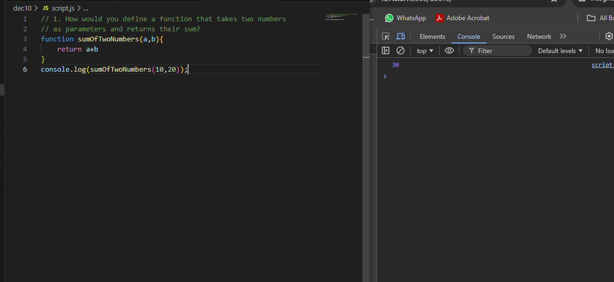
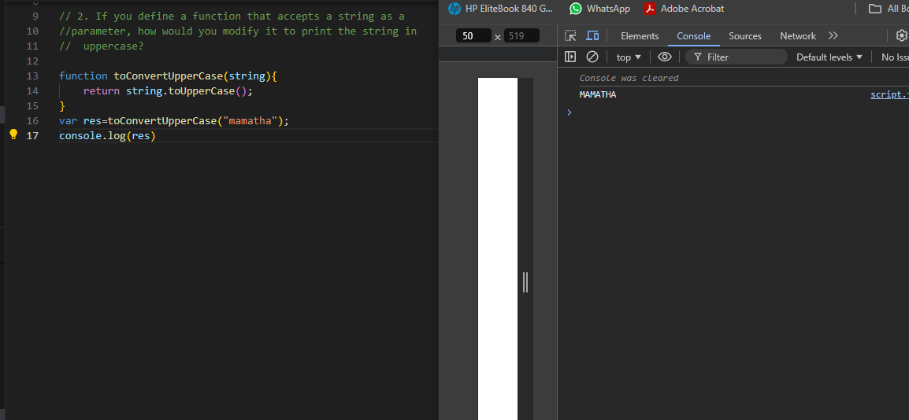
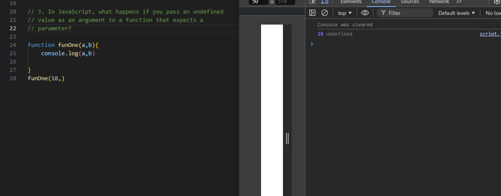
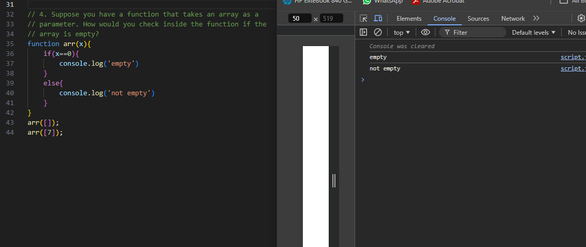
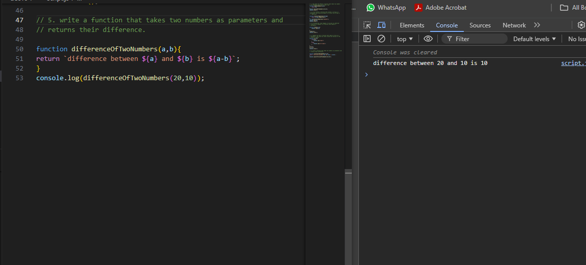
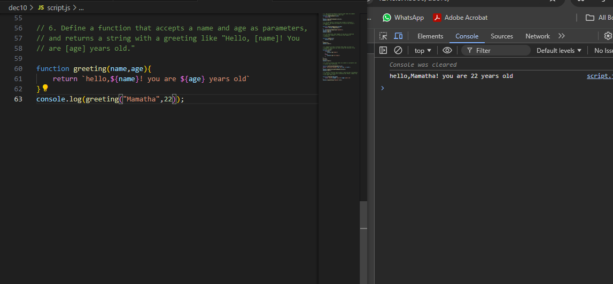
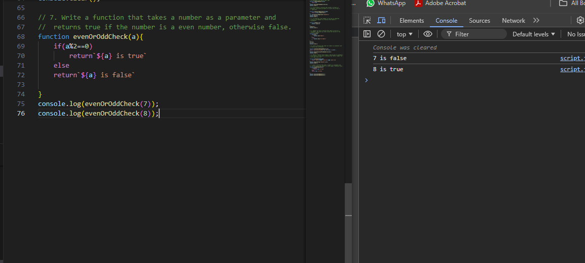

1. How would you define a function that takes two numbers as parameters and returns their sum?

2. If you define a function that accepts a string as a parameter, how would you modify it to print the string in uppercase?

3. In JavaScript, what happens if you pass an undefined value as an argument to a function that expects a parameter?

4. Suppose you have a function that takes an array as a parameter. How would you check inside the function if the array is empty?

5. write a function that takes two numbers as parameters and returns their difference.

6. Define a function that accepts a name and age as parameters, and returns a string with a greeting like "Hello, [name]! You are [age] years old."

7. Write a function that takes a number as a parameter and returns true if the number is a even number, otherwise false.
